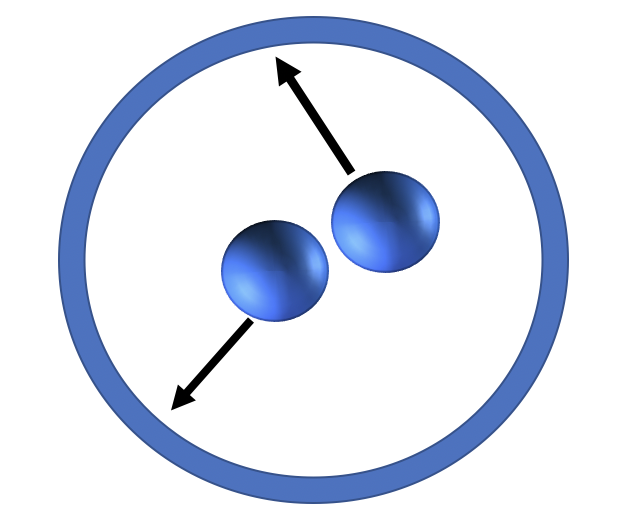
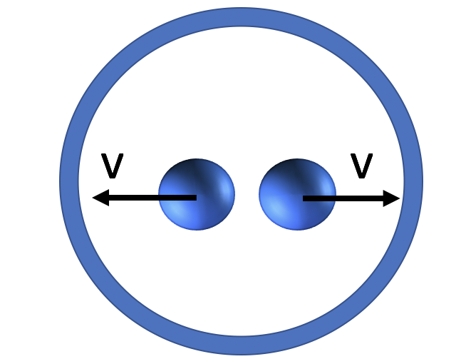

Du må bruke presentasjonsmodus/fullskjermsvisning for å lese denne, men du skal ikke bruke frem/tilbake-knappene, KUN knappene som dukker opp på sliden for å ta deg videre! Ofte må du laste filen ned til maskinen din og åpne den der for å få til dette. Merk at noen knapper vil åpne nettskjema, videoer eller andre ressurser i internettbrowseren din. Når du gjør det riktig, skal du kun se en side av gangen, og når du trykker på knappene som dukker opp på skjermen så skal disse ta deg frem/tilbake i dokumentet. Du vil miste mye læringsutbytte hvis du ser flere slides av gangen. Får du det ikke til, spør foreleser/gruppelærer!
Trykk denne knappen for å begynne
Dette er en erstatning for forelesningen i emnet. Har du gått skikkelig gjennom disse interaktive forelesningsnotatene så trenger du ikke å lese de fulle forelesningsnotatene (med unntak av oppgavene bak). All informasjonen du trenger, får du her. Du kommer til å få mange grublespørsmål og diskusjonsoppgaver, det er meningen at disse skal gjøres i grupper av minst 2, maks 4 studenter. Det er defor sterkt anbefalt at dere sitter sammen i grupper når dere går gjennom disse interaktive forelesningsnotatene, du vil få betydelig mer utbytte av dem på den måten. En god ide kan være å bli enige om å treffes til den faste forelesningstiden og bruke forelesningslokalet som kommer til å være resevert til dette. Hvis du har kommentarer ris/ros til disse forelesningsnotatene eller til emnet, trykk på 🙂 🙁 knappen som du finner på alle sider.
Trykk denne knappen for å begynne
HUSK at du får mer ut av de interaktive forelesningsnotatene når du gjør de sammen med noen. Diskusjonene med andre er svært viktige.
Det er mange spørsmål/grubliser underveis, sett dere selv en tidsgrense, 1-2 minutter på de korte, 4-5 minutter på de lenger. Ha en alarm ved siden av, ellers kommer dere til å bruke alt for langt tid. Har dere ikke fått det til etter 5 minutter, gå videre, se svaret og lær!
Er du i det minste tvil om noe, så finnes det nå en PADLETknapp, trykk det og still spørsmål med en gang mens du enda husker spørsmålet!
Trykk denne knappen for å begynne
Forrige side
Velkommen til forelesning 2 av 2 i del 2B! I denne forelesningen skal vi gå gjennom eksempler der vi bruker tidromsintervallets invarians til å løse forskjellige problemstillinger. Disse problemstillingene likner mye på de som du trenger å løse for prosjektet eller for eksamen, så følg nøye med.
Fremstillingen av spesiell relativitetsteori i AST2000 er basert på den fantastiske boken “Spacetime Physics” av E. Taylor og J. Wheeler, gratis tilgjengelig her. Anbefales på det sterkeste for den som er interessert. (Illustrasjon fra pngegg.com) Neste side
‘ Forrige side🙂 🙁IntroduksjonPADLET
Vi begynner som vanlig... ...med litt brainstorming. Som det er svært viktig at du gjør før du går videre.
Trykk her for å varme opp
Er du klar og har sendt inn skjemaet? Nei Ja
Nytt tema:
Regneregler for 4-vektorer
Forrige side🙂 🙁Regneregler for 4-vektorerPADLET
Vi begynner med en oppsummering av det vi vet om 4-vektorer i denne videoen
Forrige side🙂 🙁Regneregler for 4-vektorerPADLET
Vi skal utlede litt regneregler for 4-vektorer. Det som er spesielt viktig for å vite om en regneoperasjon på en 4-vektor er lov, er om resultatet av regneoperasjonen også er en 4-vektor. La oss si at du har en 4-vektor Aμ. Og så har du et tidromsintervall Δs mellom to eventer. Si at du av en eller annen grunn skal gange dette tidromsintervallet med 4-vektoren Aμ.Kan du gjøre det???? Eller rettere sagt: blir resultatet av denne gangeoperasjonen en 4-vektor? Sagt matematisk: Bμ = ΔsAμ Er Bμ en 4-vektor? Hvordan kan vi sjekke det?
Trykk her etter at du har tenkt gjennom hva en 4-vektor er
Forrige side🙂 🙁Regneregler for 4-vektorerPADLET
Så? Er Bμ virkelig en 4-vektor eller ikke? Hva var kravet til en 4-vektor? Er du usikker, gå tilbake til repetisjonen i starten her.
Forrige side🙂 🙁Regneregler for 4-vektorerPADLET
Er ikke kravet at en 4-vektor skal kunne transformeres fra et referansesystem til et annet med Lorentz-transformasjonen? Vi vet at Aμ er en 4-vektor, så for denne vet vi at Aμ′ = CμνAν er oppfylt (merk, Cμν er Lorentzmatrisa og Einsteins summekonvensjon har blitt brukt). Dermed vet vi hva komponentene av Aμ er i det merkede systemet, hvis vi kjenner dem i det umerkede. Men oppfyller Bμ denne betingelsen?
Jeg har tenkt godt gjennom problemstillingen
Forrige side🙂 🙁Regneregler for 4-vektorerPADLET
Det holder ikke bare å ha tenkte godt gjennom problemstillingen her, denne bør du nå ha nok informasjon til å kunne vise matematisk. Men la gå da, noen tips til: Du vet at Bμ = ΔsAμ. Prøv å finne ut hvordan Bμ′ ser ut. Du vet hvordan både Aμ og Δs (ja det vet du!) transformerer til merket system. Anta at Bμ′ = Δs′Aμ′. Følger Bμ Lorentztransformasjonen og er dermed en 4-vektor eller ikke??
Forrige side🙂 🙁Regneregler for 4-vektorerPADLET
Klarte du å vise at Bμ′ = CμνBν og at Bμ dermed er en 4-vektor?? Hvis ikke, ta en titt på denne videoen
Vi har vist at vi kan gange en 4-vektor med et tidromsintervall Δs!
Forrige side🙂 🙁Regneregler for 4-vektorerPADLET
La oss ta en til: Hvis vi nå isteden for å gange Aμ med Δs, ganger Aμ med et tidspunkt t for et event. Altså si at du prøver å lage en 4-vektor Bμ på denne måten: Bμ = tAμ der t er tidspunktet til et event målt i umerket system. Er Bμ en 4-vektor? Gjenta utledningen du akkurat gjorde på nytt...
Forrige side🙂 🙁Regneregler for 4-vektorerPADLET
Fant du at Bμ IKKE er en 4-vektor i dette tilfellet? At vi derfor ikke kan gange 4-vektorer med tidspunkter? Fordi vi da ikke lenger får en 4-vektor tilbake? Er du usikker, ta en titt på denne videoen
.
Forrige side🙂 🙁Regneregler for 4-vektorerPADLET
Vi har altså vist at vi fint kan gange en 4-vektor med en invariant størrelse, eller en skalar. I relativitetsteorien kaller vi invariante størrelser for skalarer. Tidromsintervallet Δs er et eksempel på en slik skalar. Vi så at Bμ ble en 4-vektor nettopp fordi Δs er invariant. I det vi prøvde å gange Aμ med en størrelse som ikke er invariant, slik som et tidspunkt t (som jo har forskjellig verdi i forskjellige referansesystemer) så fikk vi ikke en 4-vektor tilbake. Neste side
Forrige side🙂 🙁Regneregler for 4-vektorerPADLET
Vi har altså lært at vi kan gange 4-vektorer med skalarer, men ikke med en hvilken som helst størrelse. Det samme gjelder deling, du kan gjøre akkurat de samme bevisene og vise at vi kan dele 4-vektorer med skalarer men ikke med tall som ikke er invariante! I ukeoppgavene skal du vise at vi kan plusse og trekke 4-vektorer fra hverandre akkurat som med vanlige vektorer Neste side
Nytt tema:
4-hastighet
Hvor fort går jeg i tidrommet?
Forrige side🙂 🙁4-hastighetPADLET
Hvis vi har en posisjonsvektor x⃗ for et objekt, så vet vi at hastigheten til dette objektet er gitt ved $$\vec{v}=\frac{d\vec{x}}{dt}.$$ Kan vi definere en tilsvarende 4-dimensjonal hastighet? Altså med hvilken hastighet beveger du deg gjennom tidrommet? Posisjonen din i rom og tid kan vi angi med en posisjons-4-vektor xμ.Men hva blir 4-hastigheten din, Vμ? Noen forslag til hvordan denne kan defineres?
Forrige side🙂 🙁4-hastighetPADLET
Fikk du: $$V_\mu=\frac{dx_\mu}{dt}$$ det høres ut som en fornuftig generalisering... Næææææææ.....
Forrige side🙂 🙁4-hastighetPADLET
Du har god grunn til å tvile ja, men hvilken grunn? Ikke gå videre før du vet hvorfor du tviler! Se på uttrykket en gang til: $$V_\mu=\frac{dx_\mu}{dt}$$ Hva er galt her? (hva lært vi nettopp?)
Forrige side🙂 🙁4-hastighetPADLET
Fornuftig sier du? Se på uttrykket en gang til: $$V_\mu=\frac{dx_\mu}{dt}$$ Hva er galt her? (hva lærte vi nettopp?)
Forrige side🙂 🙁4-hastighetPADLET
$$V_\mu=\frac{dx_\mu}{dt}$$ Vi ser her at dxμ er en 4-vektor (en differanse Δxμ mellom to eventer eller to punkter langs verdenslinja) men dt er ikke en skalar!. Vi utledet over at vi ikke kan gange/dele en 4-vektor med et tall som ikke er en skalar! dt er et tidsintervall målt i et gitt referansesystem. Dette tallet er forskjellig i et annet referansesystem. Dermed blir ikke Vμ en 4-vektor. Og hvis vi vil ha en hastighetsvektor i det 4-dimensjonale rom, bør det være en 4-vektor! Har du et bedre forslag?
Forrige side🙂 🙁4-hastighetPADLET
Et hint: kan vi derivere med hensyn på en annen tid enn t? Ikke bla videre før du har et forslag! Neste side
Forrige side🙂 🙁4-hastighetPADLET
Hva med egentid τ? Husker du hva det var? javisst ja (evt. jeg repeterte nå)
Var ikke det armbåndsurtid? jovisst!
Altså tiden målt på en klokke som står fast på objektet som vi ser på, altså det objektet vi måler hastigheten til. Men er det en invariant størrelse da? (det må del vel være for at vi skal dele det med en 4-vektor!?) det var det og jeg husker hvorfor (evt. jeg repeterte nå)
Viste ikke vi i forrige forelesning at Δs = Δτ? Og hvis Δs er invariant så må også Δτ altså egentidsintervaller, være det. Men kan du se intuitivt hvorfor et egentidsintervall er invariant? Hvor bare må det per def være en invariant størrelse?
Forrige side🙂 🙁4-hastighetPADLET
Et hint: hva betyr invariant? Dette må du ha kontroll på nå, hvis ikke spør! Neste side
Forrige side🙂 🙁4-hastighetPADLET
Egentid er jo per def tiden målt på klokka til objektet som vi ser på og på ingen annen klokke. Det betyr at egentiden τ er den tiden som alle observatører i alle referansesystemer leser av (kanskje med kikkert) på klokka som står fast på objektet. Dermed må alle observatører være enige i denne tiden siden alle leser den av på den samme klokka!
Forrige side🙂 🙁4-hastighetPADLET
Da må vi altså ha følgende definisjon av 4-hastighet: $$V_\mu=\frac{dx_\mu}{d\tau}$$ 4-hastighet er endring i tidromsposisjon xμ målt av en gitt observatør (denne størrelsen vil avhenge av observatøren som måler) delt på egentiden Δτ det tar for denne endringen å finne sted (målt på klokka på objektet!).
Forrige side🙂 🙁4-hastighetPADLET
OK, la oss se om vi kan skrive ut 4-hastigheten litt mer her. En posisjonsvektor xμ i tidrommet kan vi skrive ut på komponentform som xμ = (t,x,y,z) Enig? Og siden $V_\mu=\frac{dx_\mu}{d\tau}$ så skal vi derivere hver og en komponent av xμ med hensyn på egentid τ. Kan du vise at du etter bittelitt regning kan skrive dette som: $$V_\mu=\frac{dt}{d\tau}(1,v_x,v_y,v_z)$$ der t er tiden målt i det samme referansesystemet som måler posisjonsvektoren xμ, og hastighetskomponentene er hastighet også målt i dette referansesystemet?
Forrige side🙂 🙁4-hastighetPADLET
Hvis du ikke fikk det til, se på denne videoen
. Kan du videre vise at Vμ = γ(1,v⃗) der $$\gamma=\frac{1}{\sqrt{1-v^2}}$$ der v er fart målt i det samme referansesystemet som måler posisjonsvektoren xμ? Og v⃗ er rett og slett den 3-dimensjonale hastighetsvektoren også målt i dette referansesystemet.
Forrige side🙂 🙁4-hastighetPADLET
Hvis du ikke fikk det til, se på denne videoen
.
Kaffe!
Kanskje skulle du legge deg ned på sofaen og lukke øynene i 10 min? Så alt ikke helt går i surr! Og så en strekk på bena, ok ikke minst kaffe!.
Jeg er klar til å fortsette...
Forrige side🙂 🙁4-hastighetPADLET
Vi kan altså skrive 4-hastighet som: Vμ = γ(1,v⃗) = (γ,γv⃗) Vi ser at tidsdelen av 4-vektoren, altså den første komponenten i 4-vektoren (som for posisjons-4-vektorer er tiden), her er kun Lorentzfaktoren γ. Mens den romlige delen av 4-vektoren (som for posisjons-4-vektorer er posisjonen) er hastighet ganger Lorentzfaktoren. Som for vanlige 3D-vektorer så kan vi finne lengden av en vektor ved å ta skalarproduktet av vektoren med seg selv. Vi kan altså finne 4-farten ved å gjøre nettopp dette med 4-hastighetsvektor: $$V=\sqrt{V_\mu V^\mu}$$ Merk deg en μ-indeks er nede og en er oppe for å indikere skalarprodukt. Husker du hvordan man beregner skalarproduktet? Gjør et forsøk nå på å finne en verdi for V!
Forrige side🙂 🙁4-hastighetPADLET
Fikk du... $$V=\sqrt{V_\mu V^\mu}=1$$ ???? Hvis ikke, ta en titt på denne videoen
.
Forrige side🙂 🙁4-hastighetPADLET
Hvordan kan vi tolke dette??? En fart på 1 betyr lysfarta? Beveger vi oss alle med lysfarta gjennom tidrommet? I denne videoen
får du en tolkning.
Nytt tema:
Hastighetstransformasjoner
Vi skal finne Lorentztransformasjoner for hastigheter...
Forrige side🙂 🙁HastighetstransformasjonerPADLET
Nå skal vi se hvorfor vi var så interessert i at 4-hastigheten skal være en 4-vektor. Husker du Lorentztransformasjonene? De som transformere posisjon og tidspunkt for et event fra et umerket til et merket referansesystem? Hvis vi går tilbake til togene våre i forrige forelesning så har vi en observatør på bakken og en i toget. Begge observatører observerer et event, f.eks. et av lynnedslagene. Bakkeobservatøren måler at lynnedslaget finner sted i posisjon og tid (x,t) og togobservatøren måler at det finner sted i posisjon og tid (x′,t′). Vi kan da bruke Lorentztransformasjonene til å finne det ene fra det andre hvis vi kjenner relativ hastighet vrel mellom observatørene. Ok, det har jeg kontroll på!
Men hva nå hvis begge observatører ser et fly i lufta. Observatøren på bakken vil da måle flyet til å ha fart vx i x-retning. Observatøren på toget derimot vil måle av flyet har fart v′x. Hvordan kan vi nå transformere mellom disse to? Kan vi bruke 4-hastigheten til det?
Forrige side🙂 🙁HastighetstransformasjonerPADLET
Et hint: hva var definisjonen av 4-vektor igjen? Var det ikke en egenskap som alle 4-vektorer må ha? Kan du bruke denne, gitt at du nå vet at Vμ er en 4-vektor? Hjalp det deg til å forstå hvordan vi kan gå frem for å finne v′x fra vx?
Forrige side🙂 🙁HastighetstransformasjonerPADLET
I denne videoen
går vi gjennom utledningen av hastighetstransformasjonen mellom forskjellige referansesystem. Der finner vi til slutt at Lorentztransformasjonen for hastighet er $$v'_x=\frac{v_x-v_\mathrm{rel}}{1-v_\mathrm{rel}v_x}$$ Merk at det viktigste her er å forstå og kunne gjenta selve utledningen og ideen bak utledningen slik at du kan gjøre dette selv på en helt annen type 4-vektor! Svaret i seg selv er ikke så viktig, selv om det er svært interessant...
Forrige side🙂 🙁HastighetstransformasjonerPADLET
La oss gå tilbake til eksemplet i del 2A:
Hvis vi nå bruker sammenhengen $$v'_x=\frac{v_x-v_\mathrm{rel}}{1-v_\mathrm{rel}v_x}$$ hva finner vi? Fra bakken måler vi lyset til å ha lyshastighet vx = 1. Hvilken hastighet vx′ vil observatøren i bilen måle at lysstrålen har? Hvordan avhenger det av vrel? Neste side
Forrige side🙂 🙁HastighetstransformasjonerPADLET
La oss gå tilbake til eksemplet i del 2A:
Fikk du ved å sette inn vx = 1 her $$v'_x=\frac{v_x-v_\mathrm{rel}}{1-v_\mathrm{rel}v_x}$$ at vx′ = 1 uansett hva vrel er? Det skulle du få!
Forrige side🙂 🙁HastighetstransformasjonerPADLET

La oss gå tilbake til eksempler med små hastigheter (se figur): Hvis vi nå bruker sammenhengen $$v'_x=\frac{v_x-v_\mathrm{rel}}{1-v_\mathrm{rel}v_x}$$ hva finner vi? Her er den relative hastigheten mellom observatørene veldig mye mindre enn lyshastigheten, enig? Vi har at vrel ≪ 1. Det samme gjelder vx, hastigheten målt fra bakken. Hva skjer med denne likningen da??? Ikke bla om før du har uttrykket!
Forrige side🙂 🙁HastighetstransformasjonerPADLET
Får du at $$v'_x=\frac{v_x-v_\mathrm{rel}}{1-v_\mathrm{rel}v_x}$$ blir til v′x = vx − vrel når både vx og vrel er mye mindre enn lyshastigheten? Er ikke dette uttrykket for hastighetstransformasjon i den klassiske relativitetsteorien som vi snakket om i 2A? (hvis du lurer på hvorfor vrelvx forsvinner her og ikke vrel så tenk på hvilke av disse uttrykkene som er minst her? Ta et eksempel med begge hastigheter av størrelseorden f.eks. 10−6)
Nytt tema:
Relativistisk bevegelsesmengde
Er du sikker på at du er opplagt til resten av denne forelesningen idag? Kunne du kanskje ta resten imorgen og få klarnet tankene litt?
Det blir en pause underveis... Jeg er klar...
Forrige side🙂 🙁Relativistisk bevegelsesmengdePADLET
La oss holde oss til dette eksemplet litt til:
Vi er enige om at bakkeobservatøren og observatøren i den blå bilen måler forskjellige hastigheter for den oransje bilen. Men hvis de måler forskjellige hastigheter, så er de vel heller ikke enige om bevegelsesmengden til oransje bil? Den avhenger jo av hastigheten? Kan vi lage oss en 4-dimensjonal bevegelsesmengde-4-vektor også? Isåfall hvordan? Hvordan ville du definert denne? Neste side
Forrige side🙂 🙁Relativistisk bevegelsesmengdePADLET
Vi vet at 3-dimensjonal bevegelsesmengde er gitt ved p⃗ = mv⃗ der m er massen til objektet. Kan vi generalisere dette til 4-dimensjonalt tidrom? Vi har jo allerede 4-dimensjonal hastighet Vμ? Hvordan vil du gjøre dette? Og hva må vi passe på? (lærepengen fra da vi skulle lage oss Vμ)
Forrige side🙂 🙁Relativistisk bevegelsesmengdePADLET
Det er fristende å prøve oss med Pμ = mVμ ikke sant? Kan du se noe problem med dette?
Forrige side🙂 🙁Relativistisk bevegelsesmengdePADLET
Pμ = mVμ Vi må forsikre oss om at massen m er invariant, ikke sant? Hvis ikke, så får vi ikke lov til å gange den med en 4-vektor! Men er masse en invariant størrelse da? Vil alle observatører måle den samme massen m for alle objekter? I dette kurset skal vi si JA. Men hvorfor akkurat i dette kurset? Det er en lang historie som vi ikke skal bruke tid på her, men for å gjøre en lang historie kort: du kan formulere konsistente versjoner av relativitetsteorien der enten
massen er en invariant størrelse som kun avhenger av partikkelen/legemet/systemet vi ser på, men ikke av hvilket referansesystem denne partikkelen/legemet/systemet er i. Mens energi E ikke er en invariant størrelse, ELLER
energien er en invariant størrelse men massen ikke er det (i det siste tilfellet har det mening å snakke om “hvilemasse” siden massen da vil avhenge av referansesystem og hvilemasse referer til massen man måler i hvilesystemet) Denne formalismen skal vi ikke bruke i dette kurset, og har i stor grad blitt forlatt i moderne fysikk (mens den dessverre henger igjen i mange skolebøker)
Vi har altså definert masse til å være en invariant størrelse. På denne måten får man en mer konsistent matematisk formalisme for relativitetsteorien. (relativitetsteorien åpner altså for å definere enten masse eller energi som invariant, dette er kun et definisjonsspørsmål). Og når masse da er en invariant størrelse, så gir vår definisjon av 4-bevegelsesmengde over mening!
Forrige side🙂 🙁Relativistisk bevegelsesmengdePADLET
Vi kan altså skrive 4-bevegelsesmengden til den oransje bilen som Pμ = mVμ = γ(m,p⃗) der p⃗ er den vanlige 3D-begelsesmengden målt fra f.eks. bakken. Får du til den siste overgangen her selv? (bruk et uttrykk for Vμ som vi fant over!).
Forrige side🙂 🙁Relativistisk bevegelsesmengdePADLET
La oss først se på den romlige delen av 4-vektoren, altså de 3 siste komponentene av vektoren, den delen av 4-vektoren som tilsvarer posisjon for en posisjons-4-vektor. Pμ = mVμ = γ(m,p⃗) Den romlige delen er her γp⃗. Har du sett dette uttrykket før? Det er uttrykket for relativistisk bevegelsesmengde: p⃗relativistisk = γp⃗ = γmv⃗ Det viser seg i eksperimenter at det er denne relativistiske bevegelsesmengden som er den størrelsen som er bevart! Den klassiske bevegelsesmengden p⃗ = mv⃗ er ikke en bevart størrelse slik som du har lært. Men når hastighetene er små, altså v ≪ 1, altså hastigheter mye mindre enn lyshastigheten, så er γ → 1 og de to uttrykkene blir like. Men for store hastigheter så må man bruke relativistisk bevegelsesmengde. Den klassiske er ikke en bevart størrelse.
Forrige side🙂 🙁Relativistisk bevegelsesmengdePADLET
Det ser virkelig ut til at 4-vektorformalismen har noe for seg! Når vi konstruerer en bevegelsesmengde-4-vektor, så faller det ut at den romlige delen av denne er en svært viktig fysisk størrelse. Det er dette som er det riktige og generelle uttrykket for bevegelsesmengde mens det viser seg at det klassiske uttrykket p⃗ = mv⃗ bare er en tilnærmelse for lave hastigheter. 4-vektor-formalismen og det å jobbe med matematiske størrelser i det 4-dimensjonale tidrom ser dermed ut til å kanskje være nærmere slik naturen faktisk funker. Det virker som om vi får resultater som stemmer bedre med virkeligeheten når vi jobber i dette rommet. Neste side
Forrige side🙂 🙁Relativistisk bevegelsesmengdePADLET
La oss se en gang til på 4-bevegelsesmengden: Pμ = mVμ = γ(m,p⃗) Kan vi finne en tolkning av tidsdelen av denne 4-vektoren? Altså den første komponenten som tilsvarer tid når vi snakker om posisjons-4-vektorer? Vi ser at den er γm. I denne videoen
skal vi ser på hvordan denne størrelsen ser ut i den klassiske grensen, dvs. ved lave hastigheter. Og vi skal gjøre en stor og viktig oppdagelse!
Jeg har sett videoen og har enda ikke kommet meg over sjokket!
Kaffe! Kaffe! Kaffe Kaffe! Kaffe!
Jada, jada, helt klart velfortjent nå! Det verste er overstått, nå er det bare småplukk igjen (viktig småplukk vel og merke!), og så litt spennende saker som er utenfor pensum for de interesserte på de siste sidene...
Jeg er klar til å fortsette...
Forrige side🙂 🙁Relativistisk bevegelsesmengdePADLET
Vi har altså sett at 4-bevegelsesmengdevektoren kan skrives som Pμ = (Erelativistisk,p⃗relativistisk) der Erelativistisk = mγ og er en bevart størrelse som inneholder både hvileenergien til legemet og den kinetiske i en og samme størrelse. Disse to størrelsene smelter her sammen til en energi. Det er kun ved lave hastigheter at vi ser at dette separeres ut i to forskjellige typer energier. MERK altså igjen, den klassiske kinetiske energien er ikke en bevart størrelse, men er tilnærmet bevart ved lave hastigheter. Det er kun den relativistiske energien som er en et mer generelt uttrykk for energi og som viser seg å være bevart i eksperimenter!. Det viser seg altså fra eksperimenter at bevegelsesmengde-4-vektoren Pμer en bevart størrelse!
Forrige side🙂 🙁Relativistisk bevegelsesmengdePADLET
Men hva er lengden av Pμ da? Når vi tar lengden av 4-hastigheten Vμ så fant vi at vi alle har fart lik lyshastigheten. Hva nå med lengden av bevegelsesmengde-4-vektoren? Husker du hvordan vi regnet ut lengde av Vμ? Prøv deg selv nå, se om du kan finne at $$P=\sqrt{P_\mu P^\mu}=m$$ Skalarproduktet gir oss igjen en skalar, nemlig massen til et objekt. Det er den som er lengden av vektoren, og den er konstant. For at lengden av vektoren skal bevares (altså massen bevares) når hastigheten endres (som betyr at bevegelsesmengde og energi endres, disse avhenger begge av hastighet!), må det finnes en relasjon mellom masse, energi og bevegelsesmengde.
Forrige side🙂 🙁Relativistisk bevegelsesmengdePADLET
Den skal vi finne nå. Ta utgangspunkt i Pμ = (Erelativistisk,p⃗relativistisk) Skriv skalaproduktet ut en gang til, nå uttrykkt ved relativistisk energi og bevegelsesmengde. Sette denne lik det du fant på forrige side. Klarer du å komme frem til...
...en svært viktig relasjon mellom relativistiske størrelser... Erelativistisk2 − prelativistisk2 = m2 som gjør at du f.eks. hvis du kjenner to av disse størrelsene, kan finne den 3.
Merk deg denne relasjonen da den ofte er løsningen på problemer der det virker som om informasjon mangler!!!
Forrige side🙂 🙁Relativistisk bevegelsesmengdePADLET
Denne relasjonen, Erelativistisk2 − prelativistisk2 = m2 gjør også at masseløsepartikler som fotoner faktisk har en bevegelsesmengde. Sett inn m = 0 og du får Erelativistisk2 = prelativistisk2 for fotoner. Vi husker at E = hν for fotoner. Dette blir ifølge denne formelen da også størrelsen på fotones bevevegelsesmengde, men merk at bevegelsesmengde har en retning og et fortegn mens energi bare er en størrelse. Bevegelsesmengde-4-vektoren for et foton som beveger seg i negativ retning langs x-aksen vil da kunne skrives som: Pμ = (Erelativistisk,p⃗relativistisk) = (hν,−hν,0,0)
Forrige side🙂 🙁Relativistisk bevegelsesmengdePADLET
La du merke til noe rart i dette uttrykket? Erelativistisk2 − prelativistisk2 = m2
Hva med enhetene i denne likningen da?
Dæggern... her varre no’rart...
Sa jo det jo! Men egentlig ikke så rart. Vi bruker jo nå konsekvent at vi har samme enheter for tidsintervaller som for romlige avstander. Dette endrer også andre enheter. Det gjør at vi nå måler både masse, bevegelsesmengde og energi i kg!. Dette faller automatisk ut av at vi bruker like enheter på tid og rom. For å gjøre om til vanlige SI enheter trenger du da å gjøre $$\begin{aligned} E(\mathrm{Joule})&=E(\mathrm{kg})c^2\\ p(\mathrm{kg\,m/s})&=p(\mathrm{kg})c\end{aligned}$$ Det er naturligvis lyshastigheten som kommer inn i omregningen siden det var den vi brukte for å regne om meter til sekunder og omvendt.
Forrige side🙂 🙁Relativistisk bevegelsesmengdePADLET
La oss igjen gå tilbake til eksemplet i del 2A:
Den oransje bilen har bevegelsesmengde og energi (fra bakkesystemet) px(relativistisk) = γmvx Erelativistisk = γm der px og vx er bevegelsesmengde og hastighet på den oransje bilen målt fra bakken og m er bilens masse. Målt fra den blå bilen derimot, har den oransje bilen bevegelsesmengde og energi px′(relativistisk) = γ′mvx′ Erelativistisk = γ′m der $$\gamma'=\frac{1}{1-(v_x')^2}$$
Forrige side🙂 🙁Relativistisk bevegelsesmengdePADLET
Men sett at du kun kjenner bevegelsesmengden og energien i det umerkede systemet og ønsker å finne de i det merkede systemet? Du måler p⃗relativistisk og Erelativistisk for den oransje bilen fra bakken, men ønsker å vite hva observatøren i den blå bilen måler for disse størrelsene? Og du kjenner den relative hastigheten vrel mellom de to observaørene! Hvordan kan du nå gå frem?
Dette har jeg gjort før, så det kan jeg!
Forrige side🙂 🙁Relativistisk bevegelsesmengdePADLET
Ja, nå bør du begynne å lukte lunta når du blir spurt om å transformere en størrelse fra et referansesystem til et annet! Da bør du prøve å finne en passende 4-vektor, og bruke de kjente transformasjonsegenskapene til en 4-vektor. Hva er disse?
Forrige side🙂 🙁Relativistisk bevegelsesmengdePADLET
Prøv nå å gjøre transformasjonen og se om du kommer frem til: $$\begin{aligned} E'&=\gamma_\mathrm{rel}E-v_\mathrm{rel}\gamma_\mathrm{rel}p_x\\ p_x'&=-v_\mathrm{rel}\gamma_\mathrm{rel}E+\gamma_\mathrm{rel}p_x\end{aligned}$$ der E og px er relativistiske bevegelsesmengder og energier og $$\gamma_\mathrm{rel}=\frac{1}{\sqrt{1-v_\mathrm{rel}^2}}$$
Forrige side🙂 🙁Relativistisk bevegelsesmengdePADLET
Fikk du det til? Hvis ikke, se på denne videoen
. Merk at denne typen transformasjoner bør du kunne gjøre!
Forrige side🙂 🙁Relativistisk bevegelsesmengdePADLET
Til slutt skal vi tilbake til forelesningene om kjernereaksjoner. Vi sa der at den totale massen til en atomkjerne ikke tilsvarer summen av massene. Det var dette som gjør at masse per nukleon avhenger av atomkjernen. Vi skal ikke gjøre noen nøyaktige beregninger her, men illustrere prinsippet med et forenklet eksempel. Anta at du har en atomkjerne med to like (uspesifiserte) kjernepartikler med masse m:

Den blå ringen illustrerer atomkjernens størrelse. Kjernepartiklene oppfører seg altså omtrent som gasspartikler med tilfeldige hastigheter som endrer seg hele tiden med holdes innenfor den blå sirkelen av den sterke kjernekrafta.
Her skal vi se på et øyeblikksbilde som gjør det lett å regne:

Partiklene går her i nøyaktig motsatt regning med samme hastighet v. Etter litt tid vil de selvfølgelig bli dradd tilbake igjen av den sterke kjernekrafta. Sett opp 4-bev.mengdevektoren Pμ(1) og Pμ(2) for begge partiklene hver for seg og sum så disse sammen til Pμ(M) for hele atomkjernen. Ok, har gjort det!
Fikk du Pμ(1) = (γm,γmv) og Pμ(2) = (γm,−γmv)??? Og for kjernen P(M) = (2mγ,0)??
Forrige side🙂 🙁Relativistisk bevegelsesmengdePADLET
Hvordan finner man massen av en partikkel med 4-bev.mengdevektor Pμ?? Det har vi jo akkurat lært...
Javisst ja, man tar skalarprodukt, $M=\sqrt{P_\mu(M)P^\mu(M)}$. Så hva blir totalmassen til atomkjernen? Regne, regne, regne, det blir...
$$M=\sqrt{(2m\gamma)^2-0^2}=2m\gamma$$
som ikke er 2m som vi hadde regnet med hvis masser hadde vært en additiv størrelse! Merk at atomkjernens totalmasse 2mγ er en invariant størrelse! Alle observatører vil være enige om denne massen siden lengden av Pμ er en skalar. Vi ser at hastigheten/energien til partiklene inne i atomkjernen bidrar til total masse. Merk også at dette aldri kan skje for en enkelt partikkel, da viste vi for noen sider siden at lengden av Pμ er partikkelens masse uansett hva dens hastighet er.
Forrige side🙂 🙁Relativistisk bevegelsesmengdePADLET
Vi skal avslutte med en tur utenfor pensum. For det første, la meg nevne tensorbegrepet: Går man videre med 4-vektorformalismen, så innfører man også noe som heter tensorer. Dette er en utvidelse av matrisebegrepet til 4-dimensjonalt tidrom, på samme måte som 4-vektorer er en utvidelse av vektorbegrepet til 4-dimensjonalt tidrom.
Forrige side🙂 🙁Relativistisk bevegelsesmengdePADLET
Vi avslutter med Maxwells likninger på 4-vektor-formalisme: (Også utenfor pensum!)
▫Aμ = μ0Jμ Dette er alle Maxwells likninger, som i 4-vektorformalismen kun blir denne lille likningen! Her er Aμ = (ϕ,A⃗) 4-potensial der tidskomponenten av 4-vektoren er elektromagnetisk potensial ϕ og romkomponenten er magnetisk potensial A⃗. Vi ser også at vi har Jμ = (ρ,j⃗) som er 4-strøm der tidsdelen er ladning og romdelen er elektrisk strøm. Firkanten ▫ er d’Alembert-operatoren som tilsvarer nabla ∇ i 4-dimensjonalt tidrom. Denne ene og korte likningen er ekvivalent med alle 4 Maxwell-likningene. Vi ser igjen at likninger blir mye mer elegante i 4-dimensjonalt tidrom.
Forrige side🙂 🙁Relativistisk bevegelsesmengdePADLET
Har du lyst til å sove dårlig om natta! Da kan du ta en kikk på dette “paradokset” (det er faktisk ikke et paradoks, bare ser slik ut) som også er utenfor pensum:

Her ser du to innretninger, en blå og en rød. Øverst ser du de sammen og nederst så står den røde stille og den blå har høy hastighet rett mot den røde. Den gule boksen på den røde innretningen er en utløser for en bombe. Hvis den blå innretningen trykker på denne utløseren eksploderer bomben. Merk at i figuren øverst så er de ikke nærme nok til at bomba eksploderer. Tuppen av den blå må komme enda lenger inn. Husk lengdekontraksjon: når vi ser et legeme har en gitt hastighet så blir lengden av dette legemet mindre!. Hvordan ser dette ut fra blått sitt referansesystem? Blir ikke rød da kortere og blå kan komme inn og utløse bomben? Og fra rødt sitt referansesystem? Blir ikke da den blåe enda kortere og kan ikke klare å utløse bomben? Blir bomben utløst eller blir den ikke? Sorry, du får ikke svaret her...
Du er ferdig med forelesning 2 av 2 i del 2B. Du bør nå:
vite hva verdenslinjer er og kunne tegne en verdenslinje for et legeme gitt hastigheten som funksjon av tiden
kunne utlede Newtons 1.lov fra prinsippet om maksimal aldring
vite hva en 4-vektor er og hvordan den transformerer mellom systemer
kunne utlede regneregler for 4-vektorer
kjenne Einsteins summekonvensjon, skalarprodukt og hvordan finne lengden av en 4-vektor.
kjenne uttrykket for 4-hastighet og kunne bruke dette til å transformere hastigheter fra et referansesystem til et annet
kjenne uttrykket for 4-bevegelsemengde og kunne tolke komponentene av denne, også for fotoner.
kunne utlede transformasjonen av energi og bevegelsemengde fra et referansesystem til et annet.
kunne utlede og bruke sammenhengen mellom relativistisk energi, bevegelsemengde og masse
kunne regne om energi og bevegelsesmengde mellom relativistiske enheter og SI-enheter
Flott hvis du nå kan klikke på smilefjesene over og fortelle hva du synes om dette interaktive forelesningsnotatet. Hva var bra og nøyaktig hva kan forbedres? All ris og ros mottaes med takk!